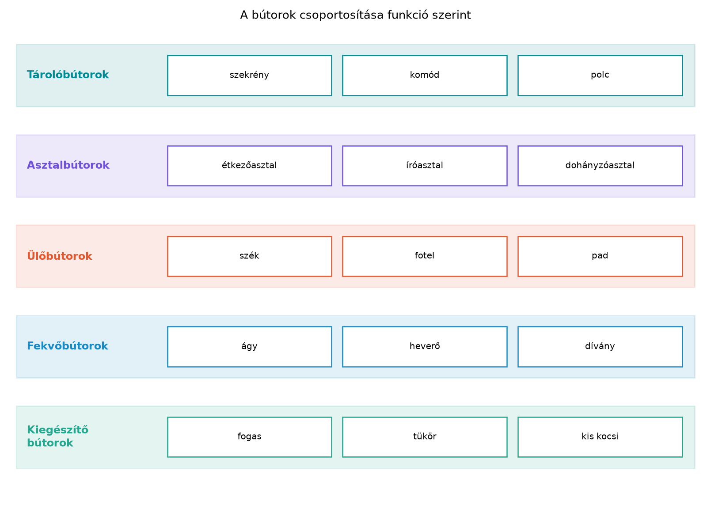

Egy vevő azzal keres meg, hogy konyhabútort szeretne. Elmondja, hogy a felesége alacsonyabb, ő viszont magas, és szeretné, ha nem fájdulna meg a hátuk a főzéstől. Egy másik megrendelő komódot kér az előszobába, de kisgyerek is van a lakásban. Az asztalosnak ilyenkor nem elég szépen rajzolni és pontosan megmunkálni: ismernie kell, mire való a bútor, milyen emberi testméretekhez kell igazítani, milyen szerkezetből lesz stabil, és mikor kell a falhoz rögzíteni.
A bútor nem csak „valami fából”. Olyan használati tárgy, amely az ember testéhez, mozgásához és tárgyaihoz illeszkedik. Ha rossz a magassága, kényelmetlen; ha rossz a szerkezete, lötyög vagy felborul; ha rossz az anyaga, hamar tönkremegy. Ezért ebben az alfejezetben először a bútor fogalmát, rendeltetését és csoportosítását tanulod meg, majd a legfontosabb ergonómiai és funkcionális méreteket.
Képzeld el a következő helyzetet a tanműhelyben: egy szoba berendezését tervezed. Egymás mellett áll egy gardróbszekrény, egy íróasztal székkel, mellette polc, az ágy mellett éjjeliszekrény, a bejáratnál fogas. Mindegyik más feladatot lát el, de együtt kell működniük az emberrel és a térrel.
A bútorokat legkönnyebben funkciójuk szerint csoportosíthatjuk. Ezt mutatja az alábbi rétegábra.

A rétegek nem azt jelentik, hogy a bútorok egymásra épülnek, hanem azt, hogy a tervezésnél minden bútort a saját csoportjában érdemes vizsgálni. A tárolóbútorok a tárgyaknak adnak helyet, az asztalbútorok a különböző tevékenységek munkafelületét adják, az ülőbútorok a testet támasztják meg, a fekvőbútorok a pihenést szolgálják, a kiegészítő bútorok pedig kisebb, de hasznos feladatokat látnak el.
Definíció. A bútor olyan berendezési tárgy, amely az ember testi kényelmét, testhelyzetét, tevékenységét vagy a tárgyak tárolását szolgálja, és az épített környezet – lakás, munkahely, középület – használhatóságát javítja. A bútor lehet szabadon álló vagy beépített, hordozható vagy rögzített, készen vásárolt vagy egyedi gyártású.
A bútor rendeltetése három nagy területre bontható:
Egy bútor gyakran egyszerre több rendeltetést is ellát. Például az íróasztal munkafelületet ad, fiókjaiban tárol, és a szoba képét is alakítja.
Az asztalos szakmában bútorasztalosnak nevezzük azt a szakembert, aki elsősorban bútorokat – szekrényeket, asztalokat, ülő- és fekvőbútorokat, beépített bútorokat – tervez, gyárt, szerel és javít. A bútorasztalos munkája eltér az épületasztalostól, aki ajtókat, ablakokat, lépcsőket készít, bár a két terület sokszor összeér.
A bútorasztalos alapismeretek közé tartozik:
Ezeket az ismereteket a későbbi fejezetek – például a szekrények, asztalok, ülő- és fekvőbútorok tervezése és gyártása – használják fel.
Ez a legfontosabb felosztás a mindennapi munkában.
Ezt a felosztást a Faipari alapszerkezetek: lap-, keret-, káva- és állványszerkezet alfejezetben már megismerted. A bútorok jellemzően a négy alapszerkezet valamelyikéből vagy ezek kombinációjából épülnek fel.
Sok bútor összetett szerkezetű: például egy íróasztal teteje lapszerkezet, fiókjai kávaszerkezet, lába pedig állványszerkezet.
A gyakorlatban a vevő és a terv dönti el, hogy szabadon álló vagy beépített bútort készítünk. A beépített bútornál a helyszíni felmérés, a falak, padló és mennyezet egyenetlenségeinek figyelembevétele különösen fontos.
Egy bútor kiválasztásánál vagy tervezésénél mindig öt alapvető jellemzőt vizsgálunk.
Ezeket a jellemzőket mindig együtt kell gondolkodni. Például egy olcsó forgácslapból készült gardrób lehet funkcionális, de rövid élettartamú; egy tömör tölgy szekrény drágább, de javítható és hosszú évtizedekig szolgál.
Az ergonómia az ember és a használati tárgy, a munkakörnyezet kölcsönhatását vizsgálja. A bútor tervezésénél az emberi testméreteket, a mozgástartományokat és a használat módját kell alapul venni.
Az itt megadott méretek tájékoztató értékek, nem tervezési előírások. A pontos adatot mindig a felhasználó testmérete, a termék rendeltetése, a gyártó adatlapja és a hatályos szabvány dönti el. Például egy irodabútorra szigorúbb előírások vonatkoznak, mint egy alkalmi dohányzóasztalra.
| Bútor vagy helyzet | Jellemző méret (mm) | Tájékoztató tartomány (mm) |
|---|---|---|
| Étkezőszék ülésmagassága | 450 | 430–470 |
| Íróasztal munkamagassága | 740 | 720–760 |
| Étkezőasztal magassága | 750 | 720–760 |
| Konyhai munkalap magassága | 900 | 850–920 |
| Dohányzóasztal magassága | 450 | 400–500 |
| Éjjeliszekrény magassága | 600 | 550–650 |
| Könyvespolc mélysége | 280 | 250–300 |
| Ruhás gardrób mélysége | 550 | 500–600 |
| Fogas alsó akasztómagassága | 1100 | 1000–1200 |
| Magas tárolóbútor (komód, szekrény) felső fiókjának fogantyúja – álló használat | 1150 | 1000–1200 |
A táblázatban a méretek mm-ben értendők. A rajzon a mm-t nem írjuk ki, de a táblázatban a félreértés elkerülése miatt feltüntettük.
Az ülésmagasság egy széknél elsősorban a térdhajlat belső magasságától függ. Ez függőlegesen a talajtól a térdhajlatig mért távolság. Az ülésmagasság a (mezítláb mért) térdhajlat-magasság plusz a cipő vastagsága (kb. 2–3 cm), mínusz egy kis ráhagyás, hogy az ülés éle a comb alsó felét ne nyomja (kb. 2–3 cm). A két korrekció nagyjából kiegyenlíti egymást, ezért tanulási példaként a tájékoztató becslőképlet (cipőráhagyással, ellenőrizendő: ergonómiai táblázat):
ahol a popliteális magasságot közelíthetjük a testmagasság arányával, például: Ezek az összefüggések tanulási példák, az arányszámokat és a pontos korrekciókat mindig az aktuális ergonómiai táblázatból vagy szabványból kell ellenőrizni (ellenőrizendő).
Az asztalmagasság ülőmunkánál az ülésmagasságtól függ. Íróasztalnál a munkalap körülbelül 27–30 cm-rel legyen a szék ülőfelülete felett, ahogy az alábbi képlet is mutatja:
Ismét hangsúlyozzuk: ez tájékoztató érték, a pontos asztalmagasság a felhasználó testarányaitól, a feladat jellegétől és a szabványtól függ.
Az ábrán a méretvonalak egymásra épülnek: a térdhajlat-magasságból a cipőráhagyással lesz ülésmagasság, ehhez adódik a 27 cm-es asztal–ülés különbség. Az interaktív változatban a testmagasság csúszkával állítható; a táblázat tartományán kívül eső érték figyelmeztetést kap.
A polcmélység a tárolt tárgy mélységétől függ. Könyvekhez 250–300 mm elegendő, ruhákhoz 500–600 mm kell, konyhai felsőszekrényhez 300–350 mm a gyakori, íróasztal polcához pedig 250–300 mm. A túl mély polc hátránya, hogy a hátsó sor nehezen elérhető, és a polc hajlamosabb a belógásra.
A fogantyúmagasság az ajtók és fiókok kényelmes nyitását szolgálja. Álló használatú tárolóbútoron (komód, szekrény) a leggyakoribb tartomány 850–1200 mm közötti; az ülve használt íróasztal fiókja a lap alatt van, fogantyúja ennél jóval alacsonyabban. A felső fiók fogantyúja ne kerüljön 1200 mm fölé, az alsó fiók pedig ne legyen 300 mm-nél alacsonyabban, mert akkor már mélyen le kell hajolni (tájékoztató).
A fekvőfelület hossza ágyaknál a testmagasságnál legalább 100–150 mm-rel nagyobb legyen. Például egy 180 cm magas embernek 190–200 cm hosszú fekvőfelület javasolt (tájékoztató).
Ezekből az adatokból látszik, hogy a bútor méreteit nem találomra vesszük fel, hanem a használó testméreteiből és a tevékenységből vezetjük le. Ilyenkor mindig a használati oldalt nézzük: hol áll, ül, hajol, nyújtózik az ember, és mennyi hely kell a mozgáshoz.
Szabvány. A lakossági bútorokra vonatkozó európai szabványok – például a tárolóbútorokra az MSZ EN 14749, az asztalokra az MSZ EN 12521, az ülőbútorokra az MSZ EN 12520, az irodai munkaasztal és -szék méreteire az MSZ EN 527-1 és az MSZ EN 1335-1, a gyermekágyakra az MSZ EN 716 (ellenőrizendő: hatályos kiadás és pontos cím) – stabilitási, szilárdsági és mechanikai biztonsági követelményeket írnak elő. Az alacsony, gyermekek által is használt bútoroknál a borulásveszély miatt a magas szekrényeket, komódokat, polcokat a falhoz vagy más szerkezethez kell rögzíteni, ha magasságuk, mélységük és súlyeloszlásuk ezt indokolja. A pontos határértékek gyártótól, termékszabványtól és a bútor rendeltetésétől függenek (ellenőrizendő).
A bútorok minőségi követelményei:
A borulás elleni rögzítés például magas komódoknál, könyvespolcoknál, cipősszekrényeknél kötelező biztonsági elem. A rögzítőelem lehet fali heveder, sarokvas, csavar és dűbel. Ennek felszerelését a szerelési útmutatónak tartalmaznia kell, és a helyszíni szerelésnél is ellenőrizni kell.
Egy vevő 178 cm testmagasságú, otthoni irodájába íróasztalt és hozzá illő széket kér. A feladat: határozd meg a szék ülőmagasságát, az íróasztal lapmagasságát, egy hozzá tartozó polc mélységét és a leggyakrabban használt fiók fogantyújának magasságát (az íróasztal lapja alatt).
Adott: - testmagasság , - tájékoztató becslőképlet popliteális magasságra, - tájékoztató hozzáadások az ülőfelülethez, asztalmagassághoz.
Keresett: - ülőmagasság, - íróasztal magassága, - polcmélység, - felső fiók fogantyúmagassága.
Megoldás lépésenként:
A szabadpiacon kapható székeknél jellemzően 45 cm-es ülőmagasságot választunk, mert ez a legközelebbi érték. Ez a méret illeszkedik a táblázatunk 430–470 mm-es tartományába.
Az íróasztal magasságát az ülőmagasságból számítjuk:
Tehát 72 cm magas munkalapot tervezünk. A táblázatunk szerint 720–760 mm közötti érték, tehát megfelelő.
A polc mélységét a rendeltetésből határozzuk meg. Az íróasztal fölötti polcra dokumentumok, mappák, könyvek kerülnek. Jó választás a 300 mm mélység, mert elég nagy a mappáknak, de a hátsó sor is elérhető.
Az íróasztal fiókja a lap alatt van, ezért a fogantyút a lap alatt kb. 80–120 mm-rel helyezzük el: kb. 620 mm magasságban (a 720 mm-es lapnál). Ülve így kényelmesen elérhető. (Az 1000–1200 mm-es fogantyúzóna az álló használatú magas komódokra és szekrényekre érvényes, nem az íróasztalra.)
Ellenőrzés. Minden méret a táblázatunk tájékoztató tartományában van (a fiók fogantyúja a lap alatt, ülve elérhető), és a 178 cm-es testmagassághoz illeszkedik. A pontos értékeket a gyártó szék- és asztaltípusa, valamint az adott szabvány pontosítja. ∎
Ez a példa azt is megmutatja, hogy a méreteket nem felvesszük, hanem a használó testméreteiből vezetjük le. Ugyanez a gondolatmenet kell később a szekrények, asztalok, ülő- és fekvőbútorok tervezésénél.
A bútor készítése vagy szerelése után a következőket ellenőrizzük:
Ha eltérést találunk, a bútort ne adjuk át. Javítsuk a hibát, vagy ha nem javítható, jelöljük meg, és tájékoztassuk a megrendelőt.
Hiba: az íróasztal túl magas vagy túl
alacsony.
Oka: nem mértük meg a használó testmagasságát, vagy „megszokásból” 760
mm-t választottunk.
Helyes gyakorlat: kérdezzük meg a használó magasságát, és a becslőképlet
szerint, vagy állítható asztallal dolgozzunk.
Hiba: a magas komód nincs a falhoz
rögzítve.
Oka: spórolás, figyelmetlenség, vagy a szerelési útmutató figyelmen
kívül hagyása.
Helyes gyakorlat: minden borulékony bútornál rögzítőelemet szereljünk
fel, és ezt ellenőrizzük a helyszíni szerelésnél.
Hiba: a polc túl mély, ezért a hátsó tárgyak
elérhetetlenek.
Oka: a polcot a hely rendelkezésre álló mélységéhez terveztük, nem a
tárolt tárgy mélységéhez.
Helyes gyakorlat: először a tárgy méretét, majd a polc mélységét
határozzuk meg.
Hiba: a fogantyú 1300 mm magasan van, ezért alacsonyabb
ember nem éri el.
Oka: a frontfelületre „szépnek” tűnő helyre tettük a fogantyút, nem a
használó kézmagasságához.
Helyes gyakorlat: álló használatú tárolóbútoron a leggyakrabban használt
fogantyú 850–1200 mm között legyen.
Hiba: a szék ülőmagassága fix, de a család tagjai között
20 cm különbség van.
Oka: egy méretet választottunk mindenkinek.
Helyes gyakorlat: állítható magasságú széket, vagy több, eltérő
ülőmagasságú széket tervezzünk.
Egy családi házban beépített gardróbot tervezünk. A férj 192 cm, a feleség 158 cm. A gardrób szekrényteste 2300 mm magas, és a vevő szeretné, ha mindketten kényelmesen elérnék a ruháikat.
Megoldásunk:
Ebből a példából is látszik, hogy a bútor tervezésekor a testméretek és a használat szokásai együtt határozzák meg a belső beosztást.
Válaszolj a kérdésekre! A válaszokat a Megoldások elején találod.
Fogalmazd meg saját szavaiddal, mit jelent az, hogy egy bútor „ergonomikus”. Adj egy példát arra, amikor egy bútor ergonómiailag rossz.
Az alábbi bútorokat sorold be funkció és szerkezet szerint: gardróbszekrény, étkezőszék, ágy, dohányzóasztal, cipősszekrény.
Egy 165 cm testmagasságú embernek íróasztalt tervezel. A becslőképletek alapján számítsd ki: - a popliteális magasságot, - a választott ülőmagasságot, - az íróasztal magasságát.
Indokold, miért ezeket az értékeket választottad.
Tervezd meg egy íróasztal fiókjának fogantyúmagasságát és egy felette lévő könyvespolc mélységét. A használó 160 cm magas. Válaszd ki a tájékoztató tartományból a megfelelő értékeket, és indokold.
Egy családi gardrób tervezésénél a férj 190 cm, a feleség 160 cm. Hogyan osztanád be az akasztórudak, polcok és fiókok magasságát? Készíts rövid méretlistát (mm-ben), és indokold a zónarendszert.
Egy 1200 mm magas, 400 mm mély, 900 mm széles komódot készítünk gyerekszobába. Milyen biztonsági vizsgálatot végeznél átadás előtt? Írj ellenőrző listát legalább öt ponttal, amely tartalmazza a stabilitásvizsgálatot és a borulás elleni rögzítést is.
Az ergonomikus bútor az emberi testméretekhez, mozgáshoz és használathoz igazodik. Például egy túl magas íróasztal ergonómiailag rossz, mert a használó felhúzott vállal dolgozik, ami nyak- és vállfájást okoz.
Adott:
.
Popliteális magasság:
.
Választott ülőmagasság:
,
kerekítve 42 cm.
Íróasztal magassága:
.
A 42 cm-es ülőmagasság a szokásos 430–470 mm-es tartomány alatt van; alacsony használónál ez indokolt, de egyedi méret vagy állítható szék szükséges. A 69 cm-es asztalmagasság is a 720–760 mm-es táblázati tartományon kívül esik, ezért egyedi méret (690 mm), mert a 720–760 mm a magasabb felhasználókhoz illik. Ezzel a használó válla lazán marad írás közben.
Egy 160 cm magas használóhoz illeszkedő íróasztal: - Ülőmagasság a 3. feladat logikájából: . (Itt nincs szükség a pontos asztal magasságra, csak a fogantyúra és polcra.) - Fogantyúmagasság: az íróasztal fiókja a lap alatt van; a kb. 690 mm-es lap alatt 80–120 mm-rel a fogantyú kb. 590 mm magasan van, ülve kényelmesen elérhető. (A 850–1200 mm-es zóna álló használatú tárolóbútorra érvényes.) - Könyvespolc mélysége: 250 mm, mert a használó kisebb termetű, és a polc fölött lévő tárgyakat könnyebben elérje; a 300 mm is elfogadható, de a 250 mm elég könyveknek és kevésbé nyúlik előre.
Rövid méretlista a családi gardróbhoz:
Indoklás: a zónarendszer a gyakoriság és a testmagasság szerint osztja el a tárolókat. A gyakran használt dolgok 800–1600 mm között, a ritkábban használtak alul-felülkapnak helyet.
Ellenőrző lista a 1200 × 400 × 900 mm-es komódhoz gyerekszobában:
A bútor olyan berendezési tárgy, amely az ember testi kényelmét, tevékenységét és a tárgyak tárolását szolgálja. Funkció szerint tároló-, asztal-, ülő-, fekvő- és kiegészítő bútorokra osztjuk. A bútor lehet szabadon álló vagy beépített, készülhet tömörfából, faalapú lapból, furnérozott lapból, fémből, műanyagból, és szerkezete lehet lap-, keret-, káva- vagy állványszerkezet, illetve ezek kombinációja. A bútor tervezésénél a funkció, szerkezet, anyag, forma és ár mellett az ergonómiai méreteket is figyelembe kell venni: ülésmagasság, asztalmagasság, polcmélység, fogantyúmagasság. A megadott értékek tájékoztatók, a pontos méret a használó testméreteitől és a szabványtól függ. A bútorokra stabilitási, teherbírási, élességi és egészségvédelmi követelmények vonatkoznak; a magas, keskeny tárolókat borulás ellen rögzíteni kell. Továbbvitt eredmény. A funkcionális méretek és a csoportosítás alapján tervezzük a történelmi bútorstílusok formajegyeit, a szekrényeket, asztalokat, ülő- és fekvőbútorokat A történelmi bútorstílusok ismertetőjegyei, Szekrények jellemző típusai és szerkezetei, Korpuszbútorok és tároló bútorok gyártástechnológiája, Asztalok jellemző típusai és szerkezetei és Ülőbútorok: típusok, állványszerkezet, ergonómia; a támlás szék szerkezeti rajza alfejezetekben.
Az alfejezet a faipari bútorasztalos szakmai ismeretekre és a hazai szakgyakorlatra épül. A funkcionális méretek táblázata tájékoztató jellegű, az értékek a szokásos ergonómiai ajánlásokból származnak, de a pontos adatokat a hatályos MSZ EN szabványok és ergonómiai táblázatok pontosítják. Ellenőrizendő: a lakossági bútorokra vonatkozó szabvány pontos száma és biztonsági követelményei (például MSZ EN 14749 sorozat), a popliteális magasság becslőképletének érvényessége és a megadott arányszám, a formaldehid-kibocsátási határértékek, valamint a gyermekbútorokra vonatkozó speciális biztonsági előírások. Gyártás előtt mindig a konkrét termékszabványt, a gyártói adatlapot és a vasalatgyártó utasításait kell követni.